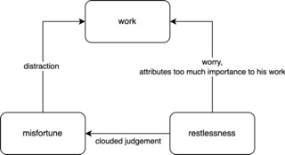

Two factors of unhappiness: social system and individual psychology.
External discipline is the only road to happiness for those unfortunates whose self-absorption is too
profound to be cured in any other way.
There are three kinds of self-absorption
- sinner: constantly feel sinned, and feel that what they do disgrade themselves, and thus do nothing.
- narcissist: wish to be admired.
- megalomaniac: admire power, largely due to the fact that they were once humuliated.
The latter two types believe that happiness does exist.
All serious success in work depends on some genuine interest in the material with which the work is
concerned.
A typical unhappy man:
=> deprived in youth of some normal satisfaction
=> value it more than everything
=> live a "one-sided direction" life + undue emphasis upon the achievement as opposed to the activities
connected with it
seeks no form of satisfaction but only distraction and oblivion will only make life bearable by becoming
less alive
Byronic Unhappiness
I have frequently experienced myself the mood in which I felt that all is vanity; I have emerged from it not
by means of any philosophy. but owing to some imperative necessity of action.
the mere absence of effort from his life removes an essential ingredient of happiness
The habit of looking to the future and thinking that the whole meaning of the present lies in what it will
bring forth is a pernicious one.
Life is not to be conceived on the analogy of a melodrama in which the hero and heroine go through
incredible misfortunes for which they are compensated by a happy ending.
give yourself an existence in which the satisfaction of elementary physical needs will occupy all your
energies.
Competition
What people fear when they engage in the struggle is not that they will not that they will fail to get their
breakfast next morning, but that they will fail to outshine their neighbors.
So long as he not only desires success, but is whole heartedly persuaded that it is a man's duty to pursue
success and that a man who does not do so is a poor creature, so long his life will remain too concentrated
and too anxious to be happy.
The social scale in America is indefinite and continually fluctuating. Consequently all the snobbish
emotions become more restless than they are where the social order is fixed...Therefore, when the market is
in ticklish condition, a man feels the way young people feel during an examination.
success is the only one ingredient in happiness, and is too dearly purchased if all the other ingredients
have been sacrificed to obtain it.
It's therefore easier to judge of their merit by the income to be inferred from their standard of life.
Unless a man has been taught what to do with success after getting it, the achievement of it must inevitably
leave him a prey to boredom.
the prodigious success of these modern dinosaurs, who, like their prehistoric prototypes, prefer power to
intelligence, is causing them to be universally imitated.
Boredom and Excitement
The desire for excitement is very deep-stated in human beings, especially in males.
We are less bored than our ancestors were, but we are more afraid of boredom...As we rise in the social
scale the pursuit of excitement becomes more and more intense...
After all the mornings are boring in proportion as the previous evenings were amusing.
A certain power of enduring boredom is therefore essential to a happy life...All great books contain boring
portions, and all great lives have contained uninteresting stretches.
No great achievement is possible without persistent work, so absorbing and so difficult that little energy
is left over for the more strenous kinds of amusement.
the most primitive possible form is union with the life of Earth. But in a higher for the same thing is to
be found in poetry.
Fatigue
sources of nervousness and tension: noise, investigate strangers, shuttles
To a great extent fatigue in such cases is due to worry, and worry could be prevented by a better philosophy
of life and a little more mental discipline
not in a way to produce a sound life of conduct on the morrow, but in that half-insane way that
characterizes the troubled meditations ofo insomnia.
The wise man thinks about his troubles only when there is some purpose in doing so; at other times he thinks
about other things, or, if it is right, about nothing at all.
disciplined mind:
=> think about a matter adequately at the right time rather than inadequately at all times
=> when a difficult or worrying decision has to be reached, as soon as all the data are available, give the
matter your best thought and make your decision; having made the decision, do not revise it unless some new
fact comes to your knowledge.
A great many worries can be diminished by realizing the unimportance of the matter which is causing the
anxiety.
whether I spoke well or ill, the universe would remain much the same in either case.
Our doings are not so important as we naturally suppose; our successes and failures do not after all matter
very much. Even great sorrows can be survived; troubles which seem as if they must put an end to happiness
for life fade with the lapse of time until it becomes almost impossible to remember their poignancy.

Every kind of fears grows worse by not being looked at.